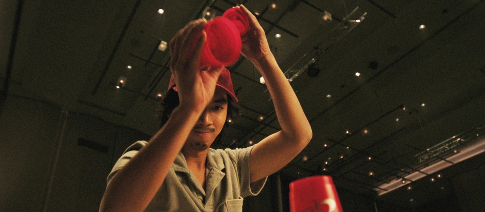
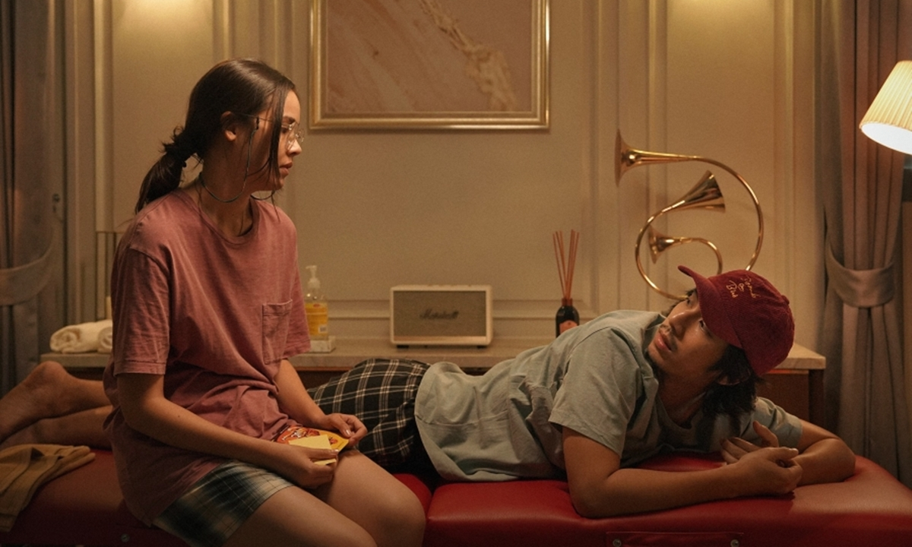

- Fast & Feel Love -
- ไม่รู้ว่าจะเรียกหนังเรื่องนี้เป็นเเนวอะไรดีเหมือนกัน เพราะมีทุกอย่างใน เรื่องเดียวจริงๆ งั้นเราเรียกว่าเป็นหนังเเนว"เต๋อ" (นวพล) ละกัน 555
- ไม่คิดเลยว่าการหยิบจับเรื่องราวต่างๆในชีวิตประจำวันมาทำเป็นซีนเเอ็กชั่น เล้าใจใส่ score ระดับหนัง Hollywood จะทำให้การทอดไข่ ล้างจาน เซ็นเอกสาร จ่ายค่าน้ำ ค่าไฟ เรียกกู้ภัย มันออกมาดูสนุกเเละเซอร์ได้ขนาดนี้
- ความเซอร์ของหนังยังไม่หยุดเเค่นี้ อย่างที่รู้กันดีว่าหนังพี่เต๋อทุกเรื่อง มักจะวางให้ตัวละครหลายๆตัวพูดจาอะไรที่มนุษย์จริงๆเค้าไม่พูดกัน (เเล้วต้องหน้านิ่งๆด้วยนะ) เเล้วคือกับหนังเรื่องนี้เเม่งเวิร์คมากๆเลยเว้ย ตัวละครมันตลกของมันเองอะ ซีนนั้นๆมันก็ฮาเเบบไม่ต้องใส่ซาวน์เอฟเฟค เเบบหนังบางเรื่อง ซึ่งเเม่งดีมากๆ มันเป็นความตลกที่เเบบ "มึงเอาเเบบนี้จริงดิ" "เล่นงี้ไม่โดนค่าลิขสิทธ์หรอ" อะไรเเบบนั้นเลย 
- มันคือ Scary movie เวอร์ชั่นไทยที่ยำรวมทุกอย่างที่เกี่ยวกับวงการหนัง เเละป็อปเคาเชอร์ไว้ในเรื่องเดียว เเล้วมันออกมาเวิร์คเฉยเลยนะ
- ความฝัน - หนังเล่นกับธีมของความฝันเเละความชอบของคนๆนึง ได้อย่างน่าสนใจ คนเรามันก็มีหลายเเบบ หลายความฝัน คนนึงอาจจะอยาก ทำลายสถิติ Speed stacking เเต่กลับกันอีกคนอาจจะเเค่อยากมีงานดีๆทำ มีบ้าน มีครอบครัว เเค่นี้ก็มีความสุขเเล้ว ซึ่งมันไม่ได้เเย่เลย ทุกๆความฝัน มันก็มีค่าทั้งนั้นเเหละตราบใดที่มันเป็นสิ่งที่เราอยากจะทำเเละมีความสุขกับมัน
- ความสัมพันธ์ - ในที่นี้ไม่ได้หมายถึงความสัมพันธ์เเบบเเฟนอย่างเดียวนะ เเต่เราหมายถึงความสัมพันธ์ของเรากับคนอื่น ๆ รอบตัวด้วย ไม่ว่าจะเป็นเเม่ เเม่บ้าน ญาติ พี่น้อง เพื่อน ถึงเเม้เราจะมีความฝันที่สูงส่งขนาดไหน เเต่สุดท้ายอย่าลืมว่าเราไม่ได้อยู่ตัวคนเดียวนะ เรายังมีคนพวกนี้ อยู่ข้างๆเสมอ เเละที่สำคัญที่สุด อย่าให้ความฝันของเรา เวลาของเรา ไปเบียดเบียนความฝันเเละเวลาของคนอื่นเช่นกัน 
- ชีวิตประจำวัน- ก็อย่างที่บอกไปเเล้วข้างบนว่าหนังมันเล่นกับชีวิตประจำวัน ได้ดีมากๆ นี่คือดูเเล้วมีกำลังใจทอดไข่กับล้างจานมากขึ้นเลยนะ 5555 เราว่า หนังเรื่องนี้กลายเป็นเซฟโซนของเราเเล้วเเหละ ถ้ามีโอกาสจะกลับมาดูอีก ในวัย30นะ เเล้วหวังว่าเมื่อถึงวันนั้นเราจะ Relate กับหนังได้มากขึ้นไปอีก : )
#Fastandfeellove #gdh #เต๋อนวพล
ผู้เขียน: ประยศ ปลอดภัย (Red)
ภาพประกอบ: ประยศ ปลอดภัย (Red)